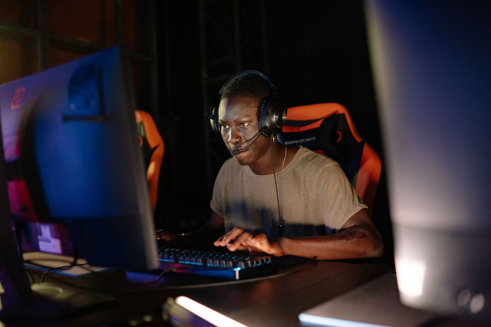

A sudden roster shift for GamerLegion
In the fast-paced world of professional Counter-Strike, roster stability is often the difference between a podium finish and an early exit. GamerLegion has recently announced a significant change to their lineup as they prepare to compete in the highly anticipated IEM Beijing closed qualifier. The organization has confirmed that Maden will be stepping in to fill a critical role within the team during this high-stakes period.
This move comes at a time when the team is looking to solidify its presence in the international circuit. With the IEM Beijing qualifier acting as a gateway to one of the most prestigious events on the esports calendar, every player choice carries immense weight. The decision to bring in Maden suggests that GamerLegion is prioritizing immediate performance and tactical depth to navigate the complexities of the qualifier.
Who is Maden and what does he bring to the table
Maden is a name well-known to many fans of the tactical shooter genre. Known for his aggressive playstyle and ability to find openings in tight defensive setups, he has built a reputation as a reliable player who can perform under pressure. His inclusion in the GamerLegion roster is not just a temporary fix but a strategic attempt to inject fresh energy into an existing system.
The addition of a player with Maden's caliber of experience provides the team with a much-needed tactical edge during this qualifying phase.
The importance of the IEM Beijing closed qualifier
The IEM Beijing closed qualifier is far more than just another tournament on the schedule. It serves as a critical proving ground for teams looking to ascend the global rankings and secure invitations to major tier-one events. For GamerLegion, success in this qualifier is essential to maintaining their momentum and proving that they belong among the elite squads in the world.
The competition in the closed qualifier is notoriously fierce, featuring a mix of established giants and rising underdog teams. Every match is a battle for survival, where a single bad round can end a team's hopes of progressing. By bringing in Maden, GamerLegion is clearly signaling their intent to not just participate, but to actively compete for a spot in the main event.
Challenges facing the new GamerLegion lineup
While the addition of Maden brings excitement, it also presents a set of unique challenges. Integrating a new player into an established team structure is never a seamless process. The players must quickly develop chemistry, align their communication styles, and master the team's specific tactical protocols. In a tournament as intense as IEM Beijing, there is very little time for a learning curve.
The coaching staff will undoubtedly be working overtime to ensure that Maden's individual brilliance translates into cohesive team play. They will need to balance his natural instincts with the disciplined structures that GamerLegion has worked hard to build. The success of this experiment will depend heavily on how quickly the squad can find their rhythm on the server.
Looking ahead at the competitive esports scene
As we watch these roster movements unfold, it becomes clear that the professional scene is in a state of constant flux. Teams are constantly searching for that perfect combination of talent and synergy to stay ahead of the curve. Whether Maden can lead GamerLegion to victory in Beijing remains to be seen, but his presence alone has certainly raised the stakes for their opponents.
The broader esports ecosystem is seeing similar levels of intensity across different titles. For instance, if you follow the broader trends in competitive gaming, you might recall how Team Spirit Defeat FURIA to Reach Esports Semi-Finals, showcasing how momentum and roster strength can dictate the outcome of major tournaments. Much like that high-stakes matchup, the IEM Beijing qualifier promises to deliver unexpected results and legendary performances.
See Also
If you enjoyed this Esports News article, check out Team Spirit Defeat FURIA to Reach Esports Semi-Finals for more useful reading.